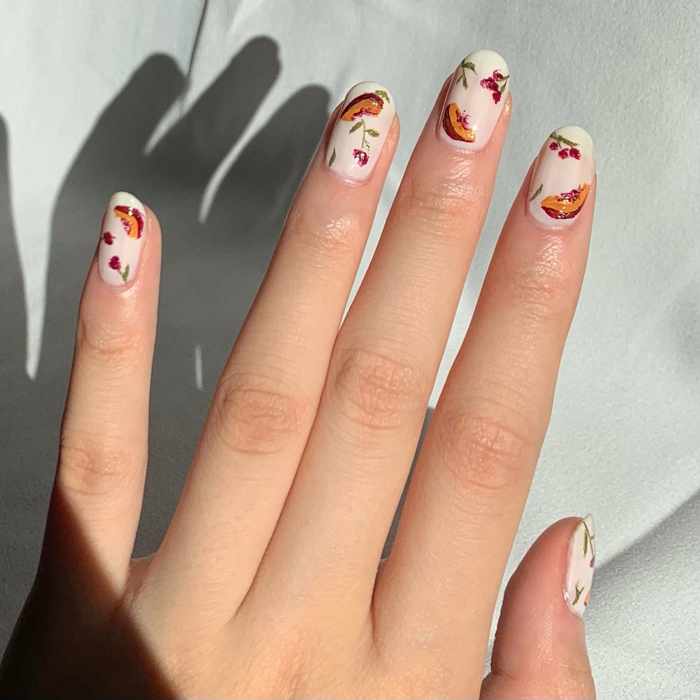

I. Repeating the steps from the Little Flowers section, paint stems and leaves for the berries
II. Use the medium blue to make clusters of small dots. Similar to the flowers, these can also be abstract and messy. This step can also be accomplished with a toothpick or an old pen if you don't want to use a brush!